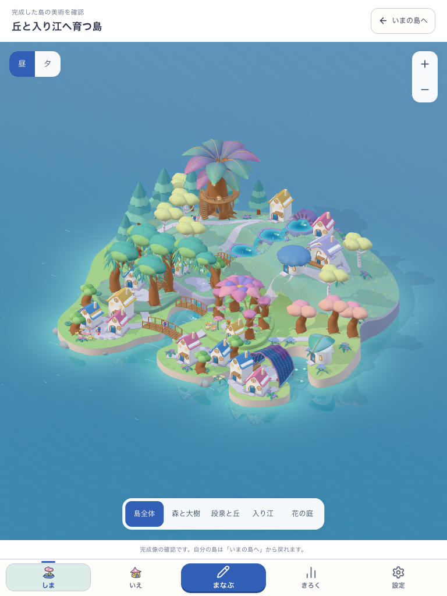
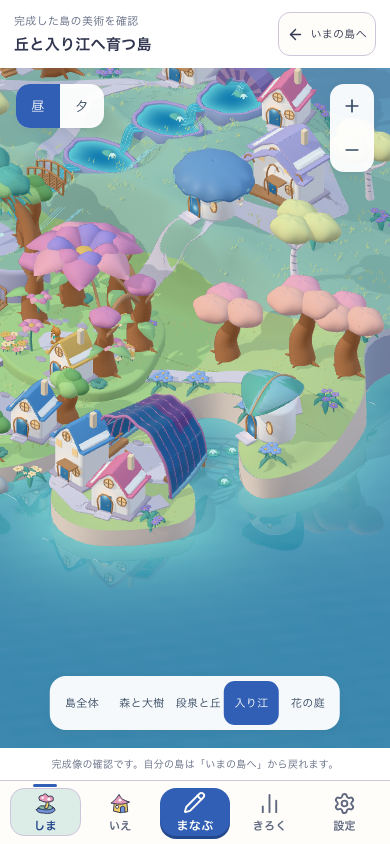
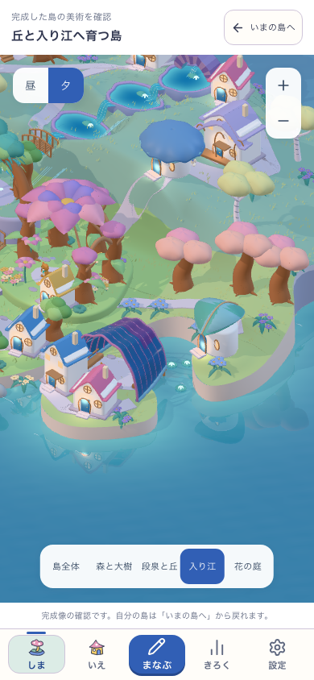

全島
輪郭、丘、森の密度と大きな主景を、一続きの島として保つ。
WHOLE ISLAND FIRST · 2026.10.10
採用した3D原本を、実アプリ内へ移しました。島の輪郭、森の密度、丘と段泉、深い入り江、透ける貝殻の屋根をまとめて保ち、この完成像から地形と成長を作ります。

現在は、完成像を本体で確認する開発工程です。自分の所有から育つ通常の島は、引き続き美術HOLD。見本の家や人物を本人の所有・人口には数えません。
PRODUCTION ORDER
機能を先に積み上げてから見た目を足す順序を改めます。原本の全景を各工程の基準にし、別の簡単な形へ置き換えたことを完成扱いにしません。
採用した原本を本体で描く。全景と4地区、昼夕を先に照合。
丘・入り江・道・入口を、描画と実際の歩行で同じ場所へ合わせる。
完成した部品を、単独→若い接続→成熟→分離→再接続へ展開する。
場所同士と集落をつなぎ、所有・実利用・学習・保存を同じ配布候補で確認。
SAME CAMERA · SAME CANVAS
カメラの位置、注視点、縮尺と表示範囲を揃えた実3D描画です。比較元だけcanvasの高さを合わせた撮影条件で、原本ファイルは変更していません。画像を押すと原寸で開きます。
輪郭、丘、森の密度と大きな主景を、一続きの島として保つ。
樹冠の重なり、中空の琥珀色の幹、螺旋階段と枝の回廊。
紫の鉱石の水源、青い三段の泉、滝と渡り橋。
深い岸と岬、色を透かす厚い貝の屋根、開いた内側。
大きな花と小さな花、木の高さ、家の尺度、色面のまとまり。
COLOUR & MATERIAL
青紫と翡翠の樹冠、琥珀色の中空、鉱石から続く青い水、透ける貝の屋根。昼でも場所ごとの違いが読み取れ、夕は窓と花の光が育ちます。


SEPARATE GATES
原本の造形を本体へ転写し、全景・近景を比較。通常の所有島のHOLDと、新しい利用者の美術判断は別に保持します。
操作の大きさ、エラー時の表示、元の島への帰還を確認。子どもの無説明理解と再訪は未観察です。
原本buffer/transform、所有不変、通常島/学習への帰還、読み込み/描画の再試行を検査。動的成長・配布・実機は次工程です。